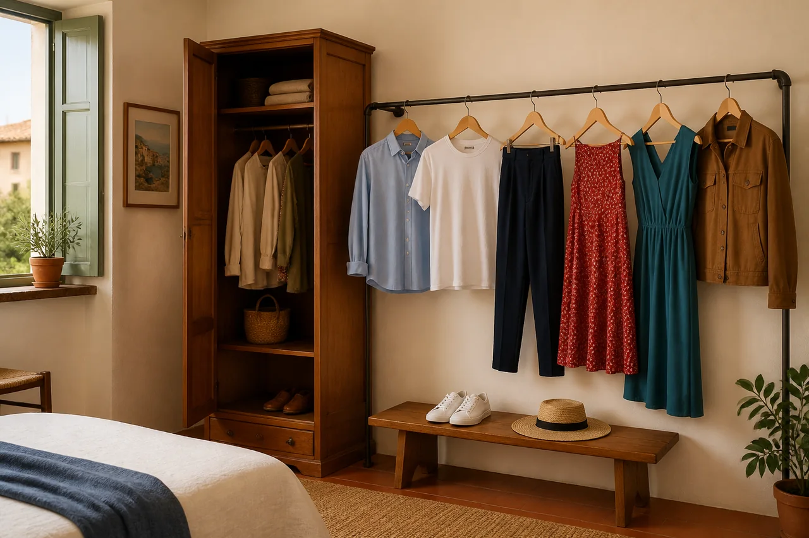
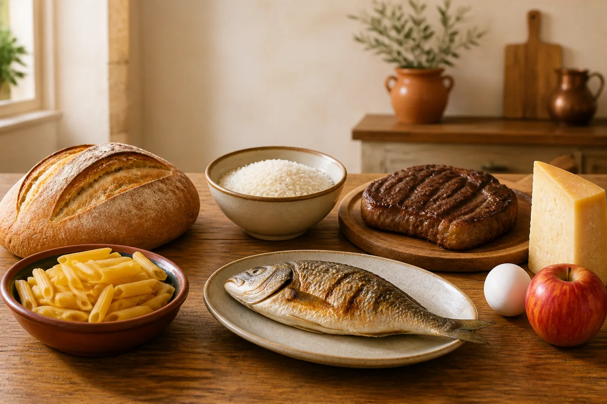

Il mare
Spiaggia, onde, barca e vacanze.
In preparazioneVocabolario illustrato
Esplora ambienti e situazioni quotidiane. Ogni parola ha un’immagine, tre frasi italiane e la pronuncia.

20 parole per mobili, stoviglie e utensili.
Lezione disponibile
8 parole per vestiti, scarpe e accessori.
Lezione disponibile
8 parole essenziali per parlare di ciò che mangiamo.
Lezione disponibile
8 parole per mobili e oggetti del salotto.
Lezione disponibile8 parole per strumenti, documenti e lavoro.
Lezione disponibileSpiaggia, onde, barca e vacanze.
In preparazioneSentieri, boschi, rifugi e paesaggi.
In preparazioneStrade, negozi, trasporti ed edifici.
In preparazioneGuarda l’immagine, prova a capire la parola dalle tre frasi e usa “Ascolta” per ripetere la pronuncia.